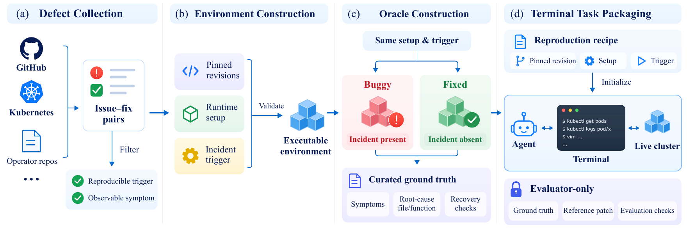

SWEOps-Bench
Evaluating agents for end-to-end resolution of software-induced cloud incidents.
55 historical incidents16 operator projects2 × 60 min phase budgets
Leaderboard
6 configurations| # | Model | Agent | Detection | Root cause analysis | |||||
|---|---|---|---|---|---|---|---|---|---|
How to read the scores
Recovery (REC)Agent declares recovery within budget and passes all applicable recovery checks, including fault clearance and functional verification.
DetectionHealthy and faulty state decisions; paired requires both to be correct in the same task.
Root cause analysisFile and function localization; joint requires both locations to be correct.
The benchmark

Compare benchmark coverage
| Benchmark | Detection | RCA | Source repair | Runtime recovery | Full lifecycle |
|---|---|---|---|---|---|
| OpsEval | — | ✓* | — | — | — |
| AIOpsLab | ✓ | ✓ | — | ✓ | — |
| ITBench (SRE) | — | ✓ | — | ✓ | — |
| SREGym | — | ✓ | — | ✓ | — |
| SWE-bench | — | — | ✓ | — | — |
| SWEOps-Bench | ✓ | ✓ | ✓ | ✓ | ✓ |
* OpsEval uses curated diagnostic Q&A. Selected benchmarks from paper Table 1.
Dataset
05101520 tasks
05101520 tasks
Explore the 16 operator projects 55 incidents
Managed systems and incident counts from paper Table 2.